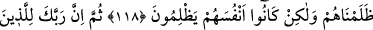

HELÂL VE TEMİZ
RIZIKTAN YEYİN
114. Artık Allah’ın size verdiği rızıktan helâl ve temiz olarak yiyin, eğer
(gerçekten) yalnız Allah’a ibadet ediyorsanız, onun nimetine şükredin.
115. (Allah) size, sadece ölü hayvanı, kanı, domuz etini ve Allah’tan başkası
adına kesilen hayvanı haram kıldı. Ancak kim mecbur kalırsa (başkalarının
haklarına) saldırmaksızın, sınırı da aşmadan (bunlardan yiyebilir). Çünkü Allah
çok bağışlayan, pek esirgeyendir.
116. Dillerinizin uydurduğu yalana dayanarak “Bu helâldir, şu da haramdır”
demeyin, çünkü Allah’a karşı yalan uydurmuş olursunuz. Şüphesiz Allah’a karşı
yalan uyduranlar kurtuluşa eremezler.
117. (Kazandıkları) pek az bir menfaattir. Halbuki onlar için elem verici bir azap
vardır.
118. Sana anlattıklarımızı, daha önce, yahudi olanlara da haram kılmıştık. Biz
onlara zulmetmedik, fakat, onlar kendilerine haksızlık ediyorlardı.
119. Sonra şüphesiz Rabbin, cahillik sebebiyle kötülük yapan, sonra da bunun
ardından tevbe edip durumunu düzeltenleri (bağışlayacaktır). Çünkü onlar tevbe
ettikten sonra Rabbin elbet çok bağışlayan, pek esirgeyendir.
“Artık Allah’ın size verdiği rızıktan helâl ve temiz olarak yiyin.” Yâni ey Mekke